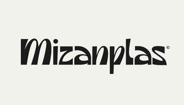

Trade Mark Journal No.2025/024 13 June 2025
UK00004211318 30 May 2025 (16,25,41)

- Class 16
- Printed publications; Publications (Printed -); Printed periodical publications; Printed periodicals; Printed books; Printed brochures; Printed newsletters; Printed reports; Photographs [printed]; Printed periodicals in the field of tourism; Promotional publications; Printed guides.
- Class 25
- Hats; T-shirts; Shirts; Tee-shirts; Printed t-shirts; Short-sleeved T-shirts; Sweatshirts; Turtleneck shirts; Long-sleeved shirts; Short-sleeve shirts; Short-sleeved shirts; Knit shirts; Corduroy shirts; Dress shirts; Hoodies; Camouflage shirts; Polo shirts; Soccer shirts; Sweat shirts; Golf shirts; Open-necked shirts; Casual shirts; Collared shirts; Sports shirts; Sleep shirts; Sport shirts; Night shirts; Under shirts; Tank-tops; Shorts [clothing]; Jerseys [clothing]; Wristbands [clothing]; Moisture-wicking sports shirts; Jackets (Stuff -) [clothing]; Stuff jackets [clothing]; Bandanas; V-neck sweaters; Sleeveless jerseys; Headbands [clothing]; Headbands for clothing; Hooded sweatshirts; Paper hats for use as clothing items; Sleeved jackets; Fleece shorts; Shirt fronts; Bib shorts; Sweaters; Hats (Paper -) [clothing]; Paper hats [clothing]; Jeans; Beanie hats; Bandanas [neckerchiefs]; Aprons [clothing]; Padded shirts for athletic use; Jerseys; Undershirts; Shorts; Stuff jackets; Jackets [clothing]; Tops [clothing]; Polo sweaters; Bottoms [clothing]; Sleeveless jackets; Button down shirts; Bandannas; Sweatpants; Trousers shorts; Denim jackets; Leggings [trousers]; Quilted jackets [clothing]; Turtleneck sweaters; Cardigans; Kerchiefs [clothing]; Denim pants; Bibs, sleeved, not of paper; Collars for dresses; Collars [clothing]; Party hats [clothing]; Blouses; Sleeveless pullovers; Singlets; Denim jeans; Wristbands; Snap crotch shirts for infants and toddlers; Jackets being sports clothing; Headbands; Undershirts for kimonos (juban); Scarves; Capes (clothing); Scarfs.
- Class 41
- Publishing services; Publishing services (including electronic publishing services); Electronic publishing services; On-line publishing services; Online digital publishing services; Electronic text publishing services; Publishing services for books and magazines; Digital video, audio and multimedia entertainment publishing services; Multimedia publishing; Publishing services for periodical and non-periodical publications, other than publicity texts; Multimedia publishing of magazines; Services for the publication of magazines; Publishing; Multimedia publishing of books; Writing services for blogs; Publishing of web magazines.
Mizanplas Ltd